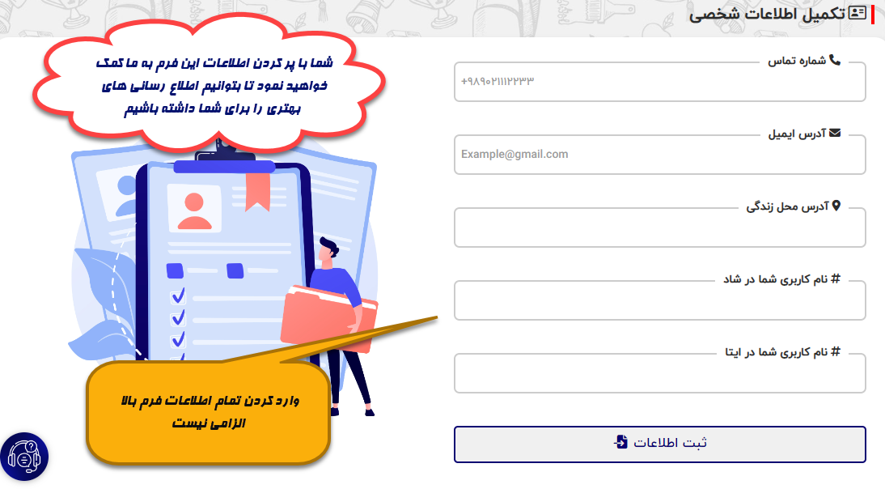

سامانه راهبران آموزشی

 ویرایش اطلاعات
ویرایش اطلاعات تغییر رمز عبور
تغییر رمز عبور


راهنمای سامانه جامع راهبران عشایر فارس
مقدمه :سامانه راهبران عشایر فارس به منظور سهولت بخشی به روند ثبت گزارش های آموزشی از مدارس عشایری استان فارس ایجاد شده است، هدف ما از راه اندازی این وبسایت کمک به فرهنگیان عزیز در جهت تسریع در انتقال سریع اطلاعات و گزارش های آموزشی است. همچنین با این کار کمک می شود در زمان سریع تری به مشکلات مدارس عشایری در تمام نقاط استان فارس رسیدگی شود.
راهنمای ورود به سامانه :لطفا قبل از ورود به سامانه راهنمای پایین صفحه ورود را با دقت مطالعه فرمایید تا بتوانید در کمترین زمان ممکن وارد سامانه شده و به انجام امور بپردازید.
راهنمای ثبت اطلاعات شخصی :ثبت اطلاعات شخصی الزامی نیست اما ورود این اطلاعات کمک می کند تا بتوانیم ارتباط بهتر و مستمری با شما همکاران عزیز داشته باشیم تا روند پیشرفت آموزشی برای دانش آموزان عشایر بهتر صورت پذیرد.
 اطلاعات مدارس و مشاهده پیام :شما فرهنگیان عزیز می توانید برای دستیابی به اطلاعات نمایندگی خود از طریق قسمت داشبورد اقدام کنید و به آمار مدارس و اطلاعات آن و همچنین گزارش های هر مدرسه دسترسی کاملی داشته باشید، همچنین شما می توانید آماری از تعداد گزارش های ثبت شده تا این لحظه و همچنین تعداد گزارش ها و پیام های ارسالی خوانده نشده را در اینجا ببینید.
ثبت بازخورد و نظرسنجی :لطفا پس از پایان ثبت گزارش خود در انجام و پر کردن فرم نظرسنجی کوشا باشد زیرا با این کار هم به خودتان و هم به کار آموزشی کمک خواهید نمود تا بتوانیم ثبت گزارش دقیق تر و همچنین رسیدگی بهتری در زمینه مدارس و دانش آموزان داشته باشیم.